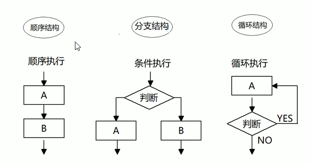
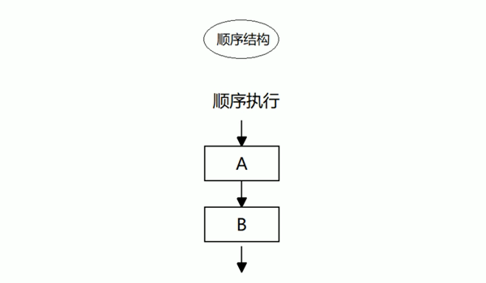
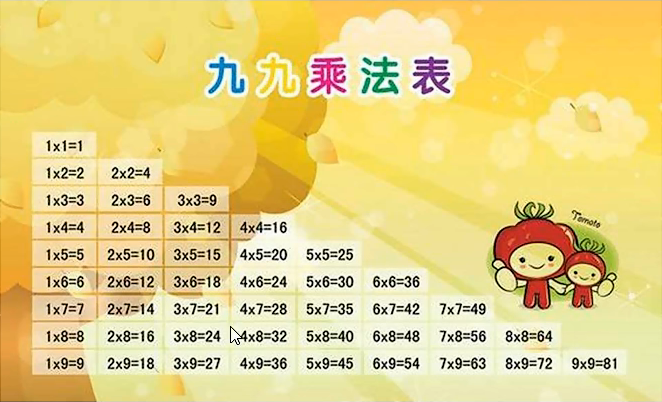

行内JS
<input type="button" value="唐伯虎" onclick="alert('秋香姐')">
内嵌式JS
<script>
alert('沙漠骆驼');
</script>
外部JS
my.js:
alert('如果我是DJ，你还爱我吗？')
index.html:
<head>
<meta charset="UTF-8">
<script src="my.js"></script>
</head>
单行注释
// 单行注释
多行注释
/*
多行注释
多行注释
*/
输入框
prompt('请输入您的年龄');
警示框
alert('警示框');
控制台输出，给程序员测试用的
console.log('我在控制台');
声明变量
var age;
var 代表声明的意思; age 代表变量名
赋值
var age;
age = 18;
age = 18; 代表age的值是18
声明变量并赋值
var name = '名字';
通过 console.log() 来输出一个变量
var name = "名字";
console.log(name);
var myname = prompt('请输入您的姓名');
alert(myname);
一个变量被重新赋值后，它原有的值就会被覆盖，变量值将最后一次赋的值为准。
var age = 18;
age = 81;
console.log(age);
结果应该是"81"
同时声明多个变量时，只需要写一个 var，多个变量名字之间使用英文的逗号隔开。
var age = 10, name = "名字", sex = 2;
JS时百年城语言，有着很强的逻辑性在里面
var temp;
var apple1 = '青苹果';
var apple2 = '红苹果';
temp = apple1;
apple1 = apple2;
apple2 = temp;
JS的变量数据类型是只有在程序运行过程中，根据等号右边的值来确定的。
var num = 10; //属于数字型
var str = 'pink'; //属于字符串型
8 进制 0 ~ 7 我们程序里卖弄前面加 0 表示 8 进制
var num1 = 010;
16 进制 0 ~ 9、a ~ f #ffffff 数字的前面加 0x 表示 16 进制
var num2 = 0x9;
JavaScript数值的最大和最小值
alert (Number.MAX_VALUE);
alert (Number.MIN_VALUE);
isNaN() 这个方法用来判断非数字，并且返回一个值，如果是数字返回的是 false 如果不是数字返回的是 true
console.log(isNaN(12)); //false
console.log(isNaN('Hello!')); //true
可以通过此方法来检测用户输入是不是数字。
单引号和双引号都是字符串型
var strMsg = "我爱北京天安门~"; //使用双引号表示字符串
var strMsg2 = '我爱吃猪蹄~'; //使用单引号表示字符串
var strMsg3 = 我爱大肘子; //报错，没有使用引号，会被认为是JS代码，但JS没有这样的语法
JS可以用单引号嵌套双引号，或者用双引号嵌套单引号（外双内单，外单内双）
var strMsg = '我是"高富帅"程序猿'; //可以用''包含""
var strMsg2 = "我是'高帅富'程序媛"; //也可以用""包含''
var badQuotes = 'What on earth?"; //报错，不能单双引号搭配
JS的换行标签不能用 <br />
错误实例：
var str = "我是一个'高富帅'的<br />程序员";
结果：我是一个'高富帅'的<br />程序员
正确实例：
var str1 = "我是一个'高富帅'的\n程序员";
使用 length 检测字符串的长度
var str = 'my name is andy';
console.log(str.length);
结果：15
多个字符串之间可以使用 + 进行拼接，其拼接方式为：“字符串 + 任何类型 = 拼接之后的新字符串”
拼接前会把与字符串相加的任何类型转成字符串，再拼接成一个新的字符串
console.log('沙漠' + '骆驼');
结果：沙漠骆驼
console.log('pink老师' + 18);
结果：pink老师18
console.log('pink' + true);
结果：pinktrue
console.log(12 +12); //24 console.log('12' + 12); //'1212'
如上源码所示，如果是两个数字相加，结果是数字型。如果一个字符串型加上一个数字型，结果是字符串型。
只要有字符串和其他类型相拼接，最终的结果是字符串类型
使用字符串和变量来拼接，因为变量可以很方便地修改里面的值
console.log('pink老师' + 18); //只要有字符串会相连
var age = 18;
// console.log('pink老师age岁啦'); //这样不行
console.log('pink老师' + age); //pink老师18
console.log('pink老师' + age + '岁啦'); //pink老师18岁啦
布尔型有两个值：true 和 false ，其中 true 表示真（对），而 false 表示假（错）
var flag = true;
var flag1 = false;
这两个值都是布尔型
布尔型和数字相加的时候，true 的值为 1，false 的值为0。
console.log(true + 1); //结果是2
console.log(false + 1); //结果是1
一个声明后没有赋值的变量会有一个默认值 undefind（如果进行相连或者相加时，注意结果）
var variable;
console.log(variable); //undefined
console.log('你好' + variable); //你好undefind
console.log(11 + variable); //NaN
console.log(true + variable); //NaN
undefind 与一个字符相加，结果相连，但是 undefind 加上任何一个数字都是 NaN
var vari = null;
console.log('你好' + vari); //你好null
console.log(11 + vari); //11
console.log(true + vari); //1
null 与一个数字相加会将 null 看成 0
typeof 可以用来检测数据类型
比如：
var num = 10;
console.log(typeof num); //number
var str = 'pink';
console.log(typeof str); //boolean
利用 + 拼接字符串的方式实现转换效果：
var num = 10;
console.log(num + '');
prompt 输出的数字都是字符串型，可以通过以下方法转换为数字型
parseInt(变量) 可以把字符串型转换为数字型，得到是整数
console.log(parseInt('3.14'));
结果：3 取整
console.log(parseInt('120px'));
结果：120 会去掉px单位
console.log(parseInt('rem120px'));
结果是：NaN
parseFloat(变量) 可以把字符型的转换为数字型，得到的是小数，也称浮点数
console.log(parseFloat('3.14'));
结果是：3.14
console.log(parseInt('120px'));
结果：120 会去掉px单位,也会把后面的单位去掉
当然，如果值是：rem120px，结果也是 NaN
利用 Number(变量)
var str = '123';
console.log(Number(str));
利用算数运算：- * / 隐式转换
console.log('12' - 0);
结果：12(数字型) 当然也可以*或者/
console.log('123' * 1);
案例：
方式：Boolean() 函数。
代表空、否定的值会被转换为 false，如 "、0、NaN、null、undefind
其余值都会被转换为 true
console.log(Boolean('')); //false
console.log(Boolean('0')); //false
console.log(Boolean('NaN')); //false
console.log(Boolean('null')); //false
console.log(Boolean('undefind')); //false
console.log(Boolean('小白')); //true
console.log(Boolean(12)); //true
运算符 (operator) 也被称为操作符，是用于实现赋值、比较和执行算数运算等功能的符号
想要一个变量+1很麻烦
var num = 1;
num = num + 1;
num = num + 1;
console.log(num); //3
前置递增运算符 ++ 写在变量前面变量
var age = 10; ++age; //类似于 age = age + 1;
前置自增和后置自增如果单独使用效果是一样的
var age = 10;
console.log(age++ + 10);
结果是：20 但是此时，age 已经是11了
var e = 10;
var f = e++ + ++e;
console.log(f);
结果：22
原理：e++ 属于后+，所以说结果是 10，但当它加上 ++e 的时候，e已经不是 10 了，已经是 11 了，而 ++e 是先+的，所以第二个 ++e 是 12，10 + 12 = 22
概念：比较运算符（关系运算符）是两个数据进行比较时所使用的运算符，比较运算后，会返回一个布尔值（true/false）作为比较运算的结果。
| 名称 | 说明 | 案例 | 结果 |
|---|---|---|---|
| < | 小于号 | 1<2 | true |
| > | 大于号 | 1>2 | false |
| >= | 大于等于号(大于或者等于) | 2>=2 | true |
| <= | 小于等于号(小于或者等于) | 3<=2 | false |
| == | 判等号(会转型) | 37==37 | true |
| != | 不等号 | 37!=37 | false |
| === | !== | 全等 要求值和 数据类型都一致 | 37==='37' | false |
比如：
console.log(3 >= 5);
结果：false
console.log(2 <= 4);
结果：true
在程序里面的等于符号是 == 默认转换数据类型会把字符型的数据类型转换为数字型
console.log(18 == '18');
结果：true
我们程序里面有全等，要求两侧数值一模一样。
console.log(18 === '18');
结果：false
为什么是 false 呢？因为两侧的值和数据类型需要完全一致才可以,而双等只需要值相等就可以。
| 逻辑运算符 | 说明 | 案例 |
|---|---|---|
| && | "逻辑与"，简称"与" and | true && false |
| || | "逻辑或"，简称"或" or | true || false |
| ! | "逻辑非"，简称"非" not | ! true |
console.log(3 > 5 && 3 > 2);
结果是：false
因为 3 > 5 所以为 false，两边数值必须都是 true 才可以。
console.log(3 < 5 && 3 > 2);
结果是：true
逻辑与两侧都为 true 结果才是 true 只要有一侧为 false 结果为 false
console.log(3 > 5 || 3 > 2);
结果是：true
只要两侧有一个为 true 结果就是 true
console.log(3 > 5 || 3 < 2);
结果是：false
逻辑或 || 两侧都为 false 结果才是 false 只要有一侧为 true 结果就是 true
console.log(!true);
结果是：false
!true 代表不是 true 的，结果就是 false
如果 !false 结果就是 true
如果表达式1结果为 true 则返回表达式 2
console.log(123 && 456);
结果是：456
因为除了0所有值都是 true 如果第一个值是 0 的话，结果是第一个值 0
console.log(0 && 456);
结果是：0
如果你的第一个值已经是 0 了，它就不会计算第二个值了
console.log(0 && 1 + 2 && 456 * 56789);
结果还是 0
这就是逻辑中断，当然，前面不是 0 是 '' 也是 false
短路运算原理：当有多个表达式（值）时，左边的表达式值可以确定结果时，就不再继续运算右边的表达式的值了
逻辑或：
console.log(123 || 456); //123
console.log(0 || 456); //456
console.log(123 || 456 || 789); //123
逻辑中断也会影响最后值的结果
var num = 0;
console.log(123 || num++);
console.log(num);
最后结果还是：0
逻辑中断很重要，它会影响我们程序的运行结果
概念：用来把数据赋值给变量的运算符。
| 赋值运算符 | 说明 | 案例 |
|---|---|---|
| = | 直接赋值 | var usrName = '我是值' |
| +=、-= | 加、减一个数 后在赋值 | var age = 10; age+=5; //15 |
| *=、/=、%= | 乘、除、取模 后在赋值 | var age = 2; age*=5; //10 |
这就是一个赋值运算符：
var num = 10;
如果想要给某个值加 2 有些复杂
var num = 10;
num = num + 2;
其实还有更简单的写法：
var num = 10;
num += 2;
结果与上面源码相同
num += 2; 就等于 num = num + 2; 更加的简单
当然，也可以使用乘法
var num = 10;
num *= 3;
也就相当于 num = num * 3; 结果是：6
var age = 10;
age += 5; //相当于 age = age + 5;
age -= 5; //相当于 age = age - 5;
age *= 10; //相当于 age = age * 10;
优先级列表：
| 优先级 | 运算符 | 顺序 |
|---|---|---|
| 1 | 小括号 | () |
| 2 | 一元运算符 | ++ -- ! |
| 3 | 算数运算符 | 先 * / % 后 + - |
| 4 | 关系运算符 | > >= < <= |
| 5 | 相等运算符 | == != === !== |
| 6 | 逻辑运算符 | 先 && 后 || |
| 7 | 赋值运算符 | = |
| 8 | 逗号运算符 | , |
以上是重点
流程控制就是控制代码按照什么结构顺序来执行
谁徐结构是程序中最简单、最基本的流程控制，它没有特定的语法结构，程序会按照代码的先后顺序，依次执行，程序中大多数的代码都是这样执行的。
由上到下执行代码的过程中，根据不同的条件，执行不同的路径代码（执行代码多选一的过程），从而得到不同的结果。

if 语法结构
if (条件表达式) {
// 执行语句
}
执行思路：如果 if 里面的条件表达式结果为 true 则执行花括号里面的 "执行语句"
如果 if 条件表达式结果为 false 则不执行大括号里面的语句，则执行 if 语句后面的代码
代码体验：
if (3 > 5) {
alert('沙漠骆驼');
}
if else 语句（双分支语句）
//条件成立 执行 if 里面的代码，否则执行 else 里面的代码
if (条件表达式) {
//[如果] 条件成立执行的代码 语句 1
} else {
//[否则] 执行的代码 语句 2
}
如果 if 条件满足，执行语句 1 如果条件不满足，执行语句 2
多分支语句就是利用多个条件来选择不同的语句执行，得到不同的结果 多选 1 的过程
if else if 语句是多分支语句
if (条件表达式1) {
// 语句1;
} else if (条件表达式2) {
// 语句2;
} else if (条件表达式3) {
// 语句3;
} else {
// 最后的语句;
}
执行思路：如果条件表达式 1 满足就执行 语句 1 执行完毕后，推出整个 if 分支语句
如果条件表达式 1 不满足，则判断条件表达式 2 满足的话，执行语句 2 以此类推
如果上面的所有条件表达式都不成立，则执行 else 里面的语句
三元表达式也能做一些简单的条件选择。有三元运算符组成的式子称为三元表达式
一元表达式：++num 二元表达式： 3 + 5 三元表达式：? :
var num = 10;
num > 5 ? '是的' : '不是'
结果：是的
如果条件为 true 则返回 '是的' 如果条件表达式结果为 false 则返回 '不是'
语法结构："条件表达式 ? 表达式1 : 表达式2"
也可以赋值给其他变量
var num = 10;
var result = num > 5 ? '是的' : '不是';
跟多分支语句差不多
var num = 10;
if (num > 5) {
result = 'yes';
} else {
result = 'no';
}
用户输入数字，如果数字小于 10，则在前面补 0，比如 01, 09 如果数字大于 10，则不需要补，比如 20：
switch 语句也是多分支语句，它用于基本不同的条件来执行不同的代码。当要针对变量设置一系列的特定值的选项时，就可以使用 switch。
语法结构：switch 转换、开关 case 小例子或者选项的意思
switch (表达式) {
case value1:
执行语句1;
break;
case value2:
执行语句2;
break;
...
default:
执行最后的语句;
}
执行思路：利用表达式的值和 case 后面的选项值相匹配，如果匹配上，就执行改 case 里面的语句。如果都没有匹配上，那么执行 default 里面的语句
代码验证：
switch (2) {
case 1:
console.log('这是1');
break;
case 2:
console.log('这是2');
break;
case 3:
console.log('这是3');
break;
default:
console.log('没有匹配结果');
}
swich 的值就是拿着跟后面的值相匹配，swich 的值是 2 它就会直接匹配到 case 2 输出 log 如果值是 3 它就会直接跳到 case 3 上面去。如果都不是，它会直接匹配到 default
swich 注意事项
1. 在开发里面，表达式我们经常写成变量
var num = 3;
switch(num) {
case 3:
console.log('这是3');
break;
default:
console.log('没有匹配结果');
}
2. 我们 num 的值和 case 里面的值相匹配的时候是全等，必须是值和数据类型一致才可以 num === 1
3. break 如果当前的 case 里面没有 break 则不会退出 switch 是继续执行下一个 case
查询水果案例：用户在输出框里面输入一个水果，如果有就弹出该水果的价格，如果没有该水果就弹出 "没有此水果"
案例：判断两个值哪个最大
循环的目的：可以重复执行某些代码
比如你想要输入 100 个我错了对不起
console.log('我错了对不起');
console.log('我错了对不起');
console.log('我错了对不起');
...
非常的麻烦
for (var i = 1; i <= 100; i++) {
console.log('我错了对不起');
}
以上代码可以循环输出 100 行对不起我错了，这样道歉非常有用。
在 JS 中，主要有三种类型的循环语句：
在程序中，一组被重复执行的语句被称为 循环体，能否继续重复执行，取决于循环的 终止条件。由循环体及循环的终止条件组成的语句，被称为 循环语句
for 重复执行某些代码，通常跟计数有关系
for 语法结构：
for (初始化变量; 条件表达式; 操作表达式) {
// 循环体
}
代码体验，重复打 100 个你好：
for (var a = 1; a <= 100; a++) {
console.log('你好吗？');
}
原理：声明一个 a 变量并且值是 1 如果 a 变量小于或等于 100 则数值递增，如果大于不等于 100 则停止循环。
过程：
断点调试是指自己在程序的某一行设置一个断点，调试时，程序运行到这一行就会停住，然后你可以一步一步往下调试，调试过程中可以看各个变量当前的值，出错的话，调式到出错的代码行即显示错误，停下。
断点调试怎么调出来：鼠标右键网页点击检查，点击源代码，双击索引就可以设置断点了
for 循环可以执行相同的代码
for (var i = 1; i <= 10; i++) {
console.log('我输出10次');
}
其实我们可以让用户控制输出的次数
var num = prompt('请输入次数');
for (var i = 1; i <= num; i++) {
console.log('我输出了 num 次')
}
for 循环可以重复执行不同的代码，因为我们有计数器变量 i 的存在 i 每次循环值都会变化
我们想要输出 1 个人 1~100 岁
for (var i = 1; i <= 100; i++) {
console.log('这个人今年' + i + '岁了');
}
这样就可以输出不同的代码了
以下代码也可以输出不同的结果
for (var i = 1; i <= 100; i++) {
if (i == 1) {
console.log('这个人今年 1 岁了，他出生了');
} else if (i == 100) {
console.log('这个人今年 100 岁了，他死了');
} else {
console.log('这个人今年' + i + '岁了');
}
}
原理：1岁输出出生，100岁输出死亡，其余输出这个人今年多少岁了。
for 循环因为有了计数器的存在，我们还可以重复的执行某些操作，比如做一些算数运算。
重点案例：
很多情况下，单层 for 循环并不能满足我们的需求，比如我们要打印一个 5 行 5 列的图形、打印一个倒直角三角形等，此视就可以通过循环嵌套来实现
循环嵌套是指在一个循环语句中再定义一个循环语句的语法结构，例如在 for 循环语句中，可以再嵌套一个 for 循环，这样的 for 循环语句我们称之为双重 for 循环。
语法结构：
for (外层初始化变量; 外层的条件表达式; 外层的操作表达式) {
for (里层的初始化变量; 里层的条件表达式; 里层的操作表达式) {
//执行语句
}
}
我们可以把里面的循环看作是外层循环的语句
外层循环循环一次，里面的循环执行全部。
for (var i = 1; i <= 3; i++) {
console.log('这是外层循环的第' + i + '次');
for (var j = 1; j
<= 3; j++) {
console.log('这是里层循环的第' + j + '次');
}
}
这就是 for 循环的执行思路
核心：
// 打印武行五列星星
var str = '';
for (var i = 1; i <= 5; i++) { // 外层循环负责打印五行
for (var j = 1; j <= 5; j++) { // 里层循环负责一行打印五个星星
str += '⭐'
}
// 如果一行打印完毕5颗星星就要另起一行加 \n
str += '\n'
}
要求用户输入行数和列数，之后再控制台打印出用户输入行数和列数的星星
var rows = prompt('请输入行数：');
var cols = prompt('请输入列数：');
var str = '';
for (var i = 1; j <= rows; i++) {
for (var j = 1; j <= cols; j++) {
str += '⭐';
}
str += '\n'
}
console.log(str);
var str = '';
for (var i = 1; i <= 10; i++) {
for (var j = i; j <= 10; j++) {
str += '⭐';
}
str += '\n';
}
console.log(str);
打印

var str = '';
for (var i = 1; i <= 9; i++) {
for (var j = 1; j <= i; j++) {
str += '⭐';
}
str += '\n';
}
原理：先声明变量 var 然后首先开启外层 for 循环，声明 i = 1; i <= 9; 所以执行下面的代码，i++ 最后执行 声明 j = 1; 因为 j 小于等于 i 所以执行下面的 str += '⭐'; 然后 j 加 1 之后继续检测 j 是否小于等于 i 这个时候 j 比 i 大，所以直接执行下面的 str += '\n'; 最后执行最上面的 i++ 第二层循环开始。
最后，这是成品演示：
var str = '';
for (var i = 1; i <= 9; i++) { // 外层循环控制行数
for (var j = 1; j <= i; j++) { // 里层循环控制每一行的个数 j <= i
// 1 x 2 = 2
str += j + 'x' + i + '=' + i * j + '\t';
}
str += '\n';
}
console.log(str);
while 语句可以在条件表达式为 true 的前提下，循环执行指定的一段代码，直到表达式部位 true 时结束循环。
while 语句的语法结构如下：
while (条件表达式) {
//循环体代码
}
执行思路：
代码验证：
var num = 1;
while (num <= 100) {
console.log('你好吗？');
num++;
}
注意：num++ 必须写，不然会一直循环知道浏览器卡死
打印人的一生
var i = 1;
while (i <= 100) {
console.log('这个人今年' + i + '岁了');
i++;
}
计算 1~100 之间的所有整数的和
var sum = 0;
var j = 1;
while (j <= 100) {
sum += j;
j++;
}
console.log(sum);
案例：你爱我吗
var message = prompt('你爱我吗？');
while (message !== '我爱你') {
message = prompt('你爱我吗？');
}
alert('我也爱你啊！');
原理：弹出一个提示框，你爱我吗？如果输入我爱你，就提示结束，否则一直询问
do... while 语句其实时 while 语句的一个变体。该循环会先执行一次代码块，然后对条件表达式进行判断，如果条件为 true 就会重复执行循环体，否则将退出循环。
语法结构：
do {
// 循环体
} while (条件表达式)
执行思路跟 while 不同的地方在于 do while 先执行一次循环体，再判断条件。如果条件表达式为 true 则继续执行循环体，否则退出循环
代码验证：
var i = 1;
do {
console.log('你好吗？');
i++;
} while (i <= 100)
注意：先再执行循环体，再判断，我们会发现 do...while 循环语句至少执行一次循环体代码
continue 关键字用于立即跳出本次循环，继续下一次循环（本次循环体中 continue 之后的代码就会少执行一次）。
例如，吃5个包子，第3个有虫子，就扔掉第三个，继续吃第4个第5个包子，其代码实现如下：
for (var i = 1; i <= 5; i++) {
if (i == 3) {
continue;
}
console.log('我正在吃第' + i + '个包子');
}
结果没有第三个包子
但是有什么用呢？答案是可以计算能被7整除之外的整数和：
var sum = 0;
for (var i = 1; i <= 100; i++) {
if (i % 7 == 0) {
continue;
}
sum += i;
}
console.log(sum);
结果：4 3 1 5
break 关键字用于立即跳出某个循环（循环结束）
例如，吃了5个包子，吃到第三个发现里面有半个虫子，而且还是会动的噢，其余的都扔了，代码如下：
for (var i = 1; i <= 5; i++) {
if (i == 3) {
break;
}
console.log('我正在吃第' + i + '个包子');
}